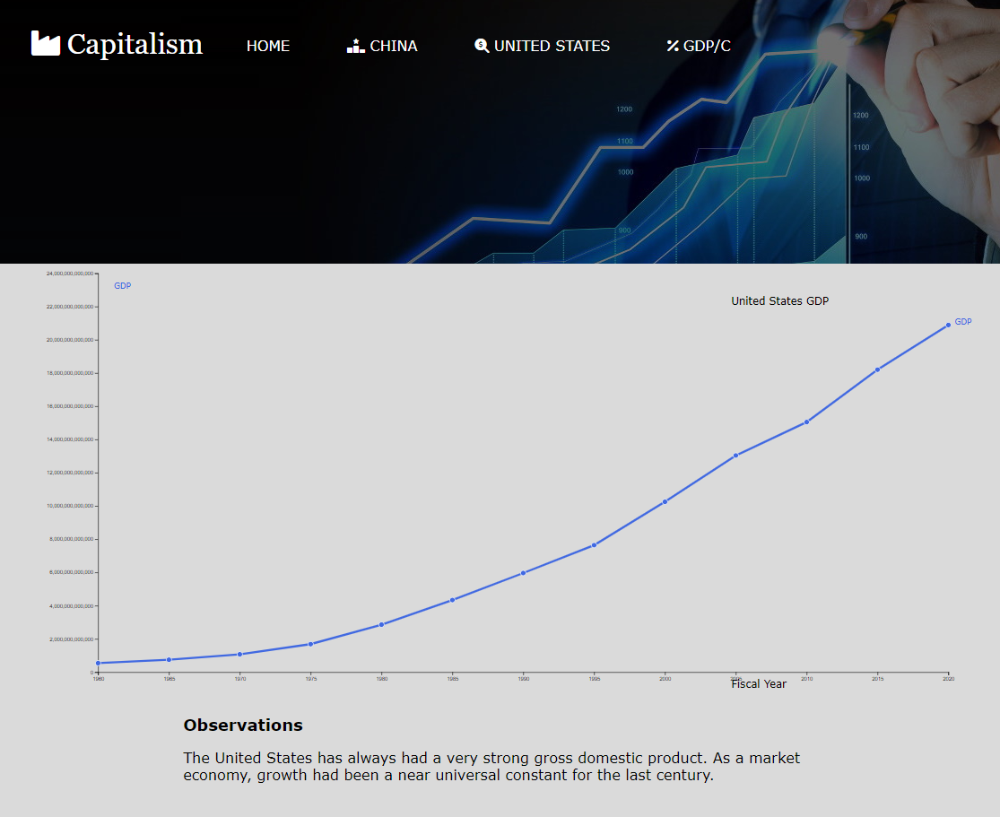

Responsive Data Visualization and Database
This website was meant to illustrate the differences in economic systems throughout the world. It utilized D3.js, Node.js, and mySQL in order to provide comprehensive data on the subject in an easy to understand manner.
Unity
While I am technically in the 6th cohort, I retook GIMM 110 with the 7th and thus had experience with Unity as it relates to GIMM at the earliest time I could have had it. Besides that, I had been using Unity for many months prior to the semester that I retook 110. I have pretty extensive experience with AR, VR, physics, scripting, animation, and various other areas in Unity.
AR Cup Pong
Our goal in this project was to create an AR cup pong experience that would be intuitive to use while making the player feel as if it is a real game occuring in AR and not just a 3D game that the user sees through their camera. We did this by making the balls trajectory dependent on the angle of the user's device. This made it so that the user has to aim with the cups not in frame in order to guess the correct trajectory. I was able to complete my portion of development because of my pretty good knowledge of the Unity rigidbody component. I worked as a developer in the project and created most of the gameplay mechanics. I also worked with the 3rd party AR library that we used for the project.